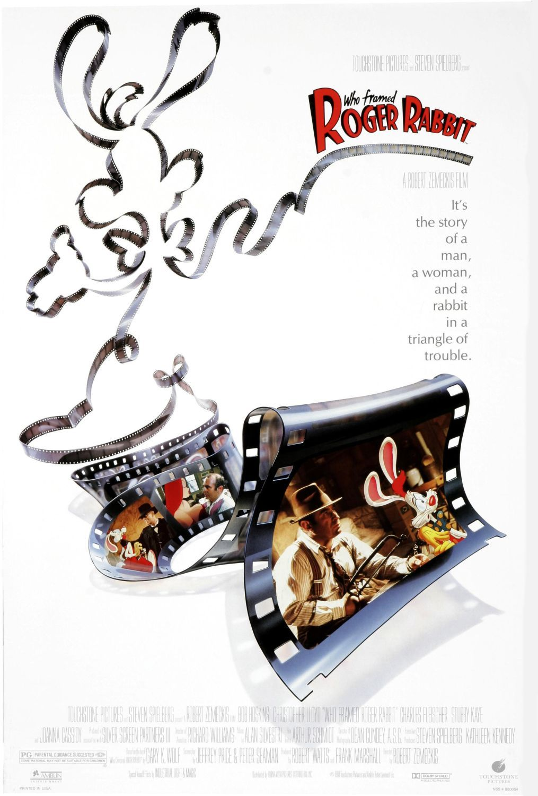

Who Framed Roger Rabbit
61st Academy Awards
(Oscars 1989)
6 Nominations, 4 Awards*
| Nominations | ||
|---|---|---|
| Category | Nominees | Result |
| Cinematography | Dean Cundey | Nominated |
| Film Editing | Arthur Schmidt | Won |
| Art Direction | Elliot Scott and Peter Howitt | Nominated |
| Visual Effects | Edward Jones, George Gibbs, Ken Ralston, and Richard Williams | Won |
| Sound | Don Digirolamo, John Boyd, Robert Knudson, and Tony Dawe | Nominated |
| Sound Effects Editing | Charles L. Campbell and Louis L. Edemann | Won |
| Special Achievement Award | Richard Williams | Won |